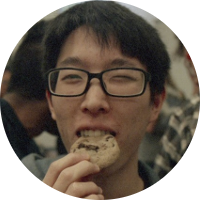
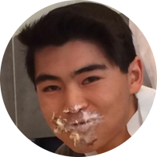
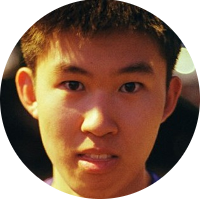

Cedric Kim
Cedric Kim claims to be a mechanical engineer, but he just can't help display his love for circuits and software. To prove it, Cedric casually built the Lidar for this project with little to no sweat. If you ever ask yourself the question: Is there anything that Cedric Kim can't engineer? The answer will always be no...
Jeremy Garcia
Software guru Jeremy brought his design experience to the table by making this beautiful website. Along with helping Cedric create the user interface in Python and integrating sensors, Jeremy also helped out on the computer vision module. Fun fact: bringing ice cream to meetings increases Jeremy’s productivity by over 9000.

Daniel Daugherty
Daniel is a mechanical engineer who specialized in rapid prototyping and mechanical design. He worked immensely with the 3D printer and the laser cutter to make sure parts were well-tested and checked before finally machined and integrated. He also helped a lot with mechanical fabrication and kept a constant positive atmosphere around the team. Daniel won’t let you see it, but he really likes dancing on camera when we were filming.
Kevin Zhang
Kevin Zhang is a computational roboticist who specializes in sensor fusion and decision making algorithms. He worked extensively on computer vision and decision making algorithms, as well as integrating data streams and parallelizing processes. He also helped greatly on firmware and sensor interfacing. Kevin has a funny obsession with chickens, which manifested itself several times in the codebase as test variables. Luckily, he is also diligent with code documentation and rooted them out for the final product.

Kevin Guo
Don't let the picture to the left fool you. Behind the serious exterior there exists a comical mechanical engineer. Kevin's CAD prowess is known throughout the school and it certainly came in handy this project. Additionally, few people know that Kevin's middle name is fabrication and his second home is the Olin Machine Shop. He was heavily involved in machining all the parts and designing the mechanical structure, and he kept a good track of our finances.